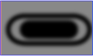
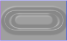

Source graphic

Primitive 1

Primitive 2

Primitive 3

Primitive 4

Primitive 5
Primitive 6
{{ PreviousNext("Web/SVG/Tutorial/Other_content_in_SVG", "Web/SVG/Tutorial/SVG_Fonts") }}
There are situations, where basic shapes do not provide the flexibility you need to achieve a certain effect. Drop shadows, to provide a popular example, cannot be created reasonably with a combination of gradients. Filters are SVG's mechanism to create sophisticated effects.
A basic example is to add a blur effect to SVG content. While basic blurs can be achieved with the help of gradients, the blur filter is needed to do anything beyond.
Filters are defined by {{SVGElement('filter')}} element, which should be put in the <defs> section of your SVG file. Between the filter tags, goes a list of primitives, basic operations that build on top of the previous operations (like blurring, adding a lighting effect, etc). To apply your created filter on a graphic element, you set the {{SVGAttr('filter')}} attribute.
<svg width="250" viewBox="0 0 200 85"
xmlns="http://www.w3.org/2000/svg" version="1.1">
<defs>
<!-- Filter declaration -->
<filter id="MyFilter" filterUnits="userSpaceOnUse"
x="0" y="0"
width="200" height="120">
<!-- offsetBlur -->
<feGaussianBlur in="SourceAlpha" stdDeviation="4" result="blur"/>
<feOffset in="blur" dx="4" dy="4" result="offsetBlur"/>
<!-- litPaint -->
<feSpecularLighting in="blur" surfaceScale="5" specularConstant=".75"
specularExponent="20" lighting-color="#bbbbbb"
result="specOut">
<fePointLight x="-5000" y="-10000" z="20000"/>
</feSpecularLighting>
<feComposite in="specOut" in2="SourceAlpha" operator="in" result="specOut"/>
<feComposite in="SourceGraphic" in2="specOut" operator="arithmetic"
k1="0" k2="1" k3="1" k4="0" result="litPaint"/>
<!-- merge offsetBlur + litPaint -->
<feMerge>
<feMergeNode in="offsetBlur"/>
<feMergeNode in="litPaint"/>
</feMerge>
</filter>
</defs>
<!-- Graphic elements -->
<g filter="url(#MyFilter)">
<path fill="none" stroke="#D90000" stroke-width="10"
d="M50,66 c-50,0 -50,-60 0,-60 h100 c50,0 50,60 0,60z" />
<path fill="#D90000"
d="M60,56 c-30,0 -30,-40 0,-40 h80 c30,0 30,40 0,40z" />
<g fill="#FFFFFF" stroke="black" font-size="45" font-family="Verdana" >
<text x="52" y="52">SVG</text>
</g>
</g>
</svg>
{{ EmbedLiveSample('Example', '100%', 120) }}
<feGaussianBlur in="SourceAlpha"
stdDeviation="4"
result="blur"/>
{{SVGElement('feGaussianBlur')}} takes in "SourceAlpha", which is the alpha channel of the source graphic, applies a blur of 4, and stores the result in a temporary buffer named "blur".
<feOffset in="blur"
dx="4" dy="4"
result="offsetBlur"/>
{{SVGElement('feOffset')}} takes in "blur", which we previously created, shifts the result 4 to the right and 4 to the bottom, and stores the result in the buffer "offsetBlur". The two first primitives just created a drop shadow.
<feSpecularLighting in="offsetBlur"
surfaceScale="5" specularConstant=".75"
specularExponent="20" lighting-color="#bbbbbb"
result="specOut">
<fePointLight x="-5000" y="-10000" z="20000"/>
</feSpecularLighting>
{{SVGelement('feSpecularLighting')}} takes in "offsetBlur", generates a lighting effect, and stores the result in the buffer "specOut".
<feComposite in="specOut" in2="SourceAlpha"
operator="in"
result="specOut"/>
The first {{SVGElement('feComposite')}} takes in "specOut" and "SourceAlpha", masks out the result of "specOut" so that the result is not bigger than "SourceAlpha" (the original source graphic), and overrides the result "specOut".
<feComposite in="SourceGraphic" in2="specOut"
operator="arithmetic"
k1="0" k2="1" k3="1" k4="0"
result="litPaint"/>
The second {{SVGElement('feComposite')}} takes in "SourceGraphic" and "specOut", adds the result of "specOut" on top of "SourceGraphic", and stores the result in "litPaint".
<feMerge> <feMergeNode in="offsetBlur"/> <feMergeNode in="litPaint"/> </feMerge>
Finally, {{SVGElement('feMerge')}} merges together "offsetBlur", which is the drop shadow, and "litPaint", which is the original source graphic with a lighting effect.
Source graphic
Primitive 1
Primitive 2
Primitive 3
Primitive 4
Primitive 5
Primitive 6
{{ PreviousNext("Web/SVG/Tutorial/Other_content_in_SVG", "Web/SVG/Tutorial/SVG_Fonts") }}